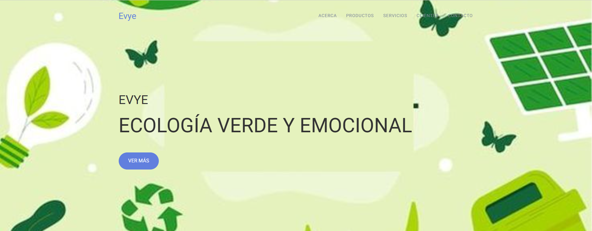
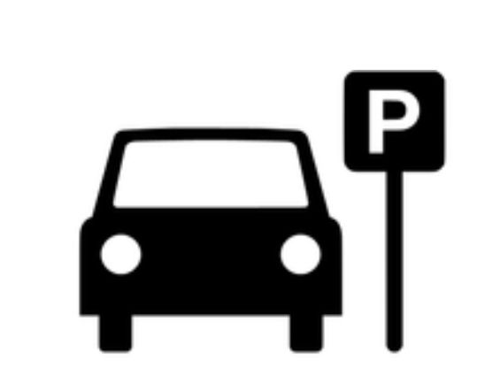

Desarrolladora web
Edna Castañeda Zapata
Creo sitios y aplicaciones web claras, modernas y fáciles de usar. Me enfoco en transformar ideas en experiencias digitales funcionales con HTML, CSS, JavaScript, PHP, Python y Node.js.

Perfil
Sobre mí
Soy estudiante de análisis y desarrollo de software con experiencia en la creación de sitios web y aplicaciones utilizando tecnologías modernas. Me gusta resolver problemas mediante programación y aprender nuevas herramientas para mejorar mis habilidades como desarrollador.
Actualmente fortalezco mis habilidades en desarrollo frontend y backend, trabajando con bases sólidas de maquetación, lógica de programación y creación de experiencias responsivas.
Herramientas
Habilidades
HTML5
Estructura semántica, accesible y lista para buscadores.
CSS3
Diseños responsivos, animaciones suaves y sistemas visuales consistentes.
JavaScript
Interactividad, lógica de interfaz y conexión con datos.
PHP
Desarrollo de funcionalidades backend y manejo de formularios.
Python
Automatización, lógica de programación y fundamentos de backend.
Node.js
Creación de servicios web y herramientas para aplicaciones modernas.
Frontend
Backend
Bases de Datos
Herramientas
Trabajo reciente
Proyectos
Una selección de proyectos pensados para mostrar diseño, estructura, lógica e integración de tecnologías web.

EV
Proyecto es para ayudar las zonas verdes de nuestra institución educativa y algunas ideas son: Crear una canasta hecha de botellas recicladas, esto se usaría para arrojar las botellas plásticas que se desocupen en las meriendas ETC.

Fruty Fantasty
"Fruty Fantasty" es una plataforma digital que incluye una aplicación móvil y una página web diseñada para: Vender frutas frescas de alta calidad con entrega a domicilio en Medellín. Ofrecer recetas mágicas: saludables, rápidas y deliciosas que fomenten el consumo de frutas.

Refugio Rodante
Refugio Rodante es una plataforma web que busca resolver la escasez y desorganización de parqueaderos en Medellín. A través de reservas digitales, mapas interactivos, la aplicación mejora la experiencia del conductor y contribuye a descongestionar zonas críticas de la ciudad.
Contacto
Hablemos de tu próximo proyecto
Estoy disponible para colaborar en sitios web, prácticas, proyectos académicos y soluciones digitales a medida.